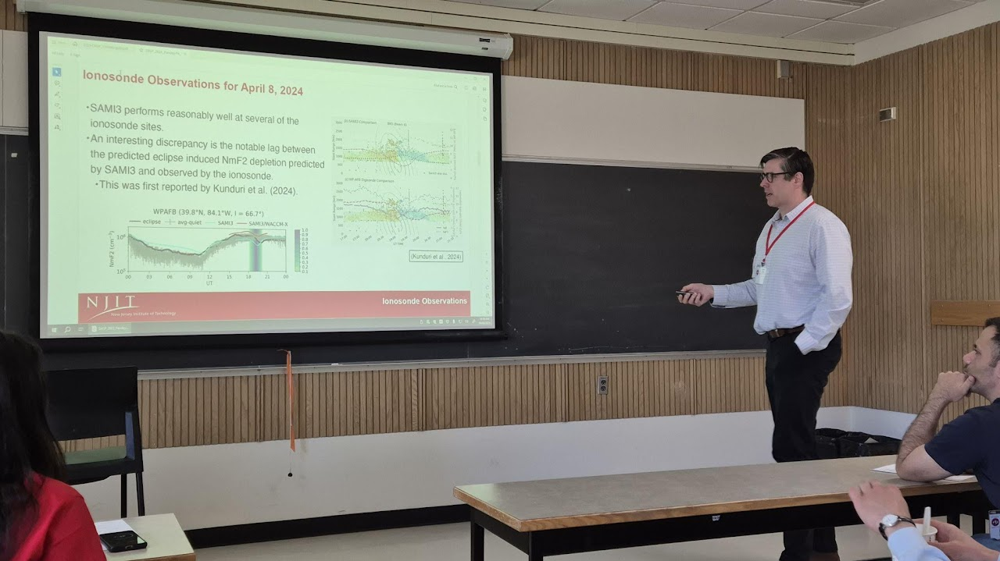
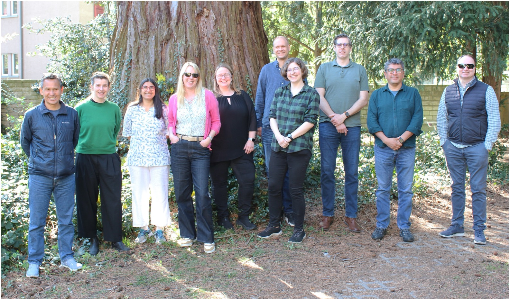
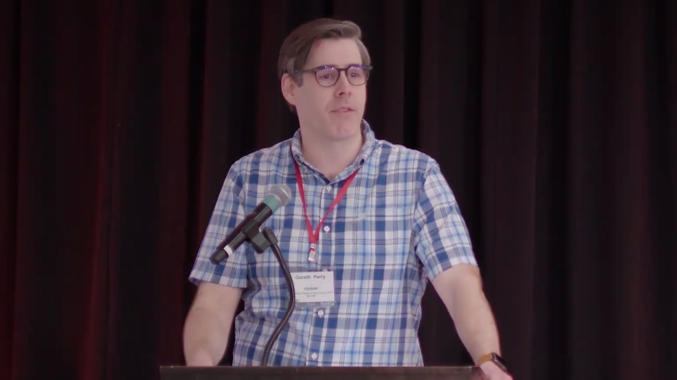
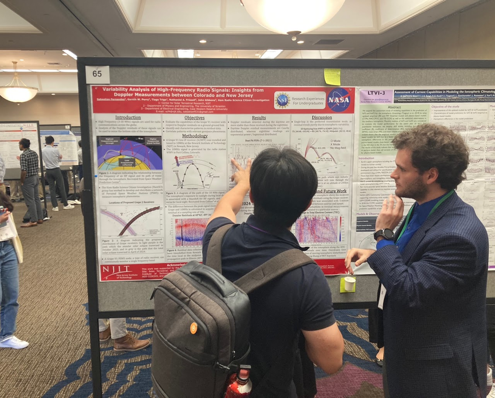

Exploring Earth's
Geospace Environment
Investigating plasma structuring and dynamics within the Earth's ionosphere and magnetosphere through innovative observational techniques.
Scroll to explore
About the Group
The Perry Group explores the Magnetosphere-Ionosphere-Thermosphere (MIT) system, investigating the plasma dynamics and "space weather" effects that impact critical communications and sensing infrastructure. Supported by the National Aeronautics and Space Administration (NASA), the Office of Naval Research (ONR), the National Science Foundation (NSF), and the Amateur Radio Digital Communications (ARDC), our team utilizes both remote sensing and in situ techniques to diagnose geospace environments. We are also committed to interdisciplinary research and citizen science, leading international initiatives like the STEVE Community Workshop and collaborating with Ham Radio Science Citizen Investigation (HamSCI) to advance our understanding of atmospheric phenomena through community-driven observations.
2019
Established at NJIT
5
Active Researchers
12
Perry Group Alumni
$6M+
Research Funding
News
2026
Perry Group Website Upgraded
The Perry Group website has recently been upgraded. Look forward to new content soon, reflecting the many activities and achievements of the group over the past several months.
Perry Group Wraps Up a Successful HamSCI Workshop
The Perry Group recently participated in the 2026 HamSCI Workshop (watch the recap video here). The event was hosted by the American Radio Relay League (ARRL) at Central Connecticut State University and was supported by NSF (AGS 2517208) and ARDC (1585H) grants awarded to the Perry Group.
Perry Group member Dr. Kuldeep Pandey delivered a keynote address on his HamSCI research regarding the effects of the 2023 and 2024 solar eclipses (more details here). Dr. Pandey's research is supported by both NSF and NASA research grants secured by the Perry Group. Well done, Dr. Pandey!
New Perry Group Publication
The latest Perry Group publication was officially released today in the journal Frontiers in Astronomy and Space Sciences. The article, "Characterizing ionospheric variability through HF Doppler measurements: a statistical and numerical ray tracing analysis," was led by Perry Group alumnus Sabastian Fernandes, and reports on a statistical analysis of the Doppler shift of signals from the National Institute of Standards and Technology (NIST) WWV transmitter in Fort Collins, Colorado, received by a HamSCI Grape HF receiver on campus at NJIT.
This research was supported by both NSF and NASA research grants secured by the Perry Group. Congratulations to Sabastian on this excellent paper!
2025
Perry Group Attends AGU in New Orleans, Wrapping Up a Busy 2025
Several members of the Perry Group were in New Orleans last week for the 2025 AGU Annual Meeting (official meeting link). In aggregate, the group contributed to 9 papers (including both oral and poster presentations) and convened several expert scientific sessions. The Perry Group is now looking forward to a well-deserved holiday break and a strong start to 2026!
June tends to be the busiest meeting month
Members of the Perry group were spread out across North America for most of June, attending scientific meetings in Virginia, Iowa, and Saskatchewan (Canada). Drs. Perry and Beser attended the SuperDARN Workshop in Roanoke, Virginia. The very next week Dr. Perry attending the Canadian CAP Congress in Saskatoon, Saskatchewan. And finally, last week Drs. Perry and Pandey participated in the joint CEDAR-GEM Workshop in Des Moines, Iowa. Perry, Pandey, and Beser several papers highlighting exciting results from the multitude of research activities underway in the group.

Dr. Perry presenting at paper at the CAP Congress at the University of Saskatchewan in Saskatoon on June 10, 2025. Photo courtesy of Dr. David Themens.
Dr. Perry Attends Inaugural ISSI ISR Working Group Meeting
Dr. Gareth Perry recently attended the inaugural week-long meeting of the ISSI ISR Working Group in Bern, Switzerland. Dr. Perry is co-leading the international group alongside Perry Group alumna Dr. Lindsay Goodwin. The group's primary objective is to "create the first definitive textbook which covers all aspects of incoherent scatter radar (ISR) techniques, theory and applications with particular relevance to the fields of space and atmospheric physics" (Project Details). The group is scheduled to meet at least two more times in Switzerland over the coming years.

Members of the ISSI ISR Working Group meeting in Bern in April 2025. Dr. Perry is in the green shirt, next to Dr. Goodwin in the green-plaid shirt.
NJIT hosts a cutting-edge citizen science research conference
NJIT welcomed over 100 in-person and 75 virtual attendees at the 2025 HamSCI Workshop, March 14 - 15, 2025. The two-day event featured over 50 talks, poster presentations, and tech demonstrations, as well as countless hours of stimulating discussions on HamSCI research. The meeting was kicked off by NJIT President, Dr. Teik Lim, who gave a rousing speech which set the tone for the remainder of the meeting. HamSCI is a collective of traditional and citizen scientists who use ham radio to study the natural geospace environment. Members of the Perry Group, including Drs. Perry and Pandey, are part of the HamSCI local organizing committee.

Dr. Gareth Perry introducing NJIT Prsident Dr. Teik Lim at the 2025 HamSCI Workshop on March 14, 2025.
Members of the Perry group are part of the workshop local organizing committee
NJIT is hosting the 2025 HamSCI Workshop, which will take place at NJIT on March 14 - 15, 2025. The annual workshop features presentations, demonstrations, and discussions on HamSCI participants' activities over the past year. HamSCI is a collective of traditional and citizen scientists who use ham radio to study the natural geospace environment. Members of the Perry Group, including Drs. Perry and Pandey, are part of the HamSCI local organizing committee. For more details, consult the 2025 HamSCI Workshop website.
Kaur to advance HPC numerical raytracing work
NJIT Graduate Student (Applied Physics) Navdeep Kaur has joined the Perry Group. They will be leading the effort to expand the Perry Group's existing High Frequency (HF) numerical raytrace propagation modeling efforts into the High Performance Computing (HPC) realm, building on efforts of former Perry Group member Tanmay Kapure.
2024
Members of the Perry group will use citizen science data to study eclipse effects
Prof. Perry has been awarded a NASA grant (80NSSC25K7026) to study the effects of the October 2023 and April 2024 solar eclipses and their effects on the terrestrial ionosphere-thermosphere system. The project titled "A HamSCI investigation of the bottomside ionosphere during the 2023 annular and 2024 total solar eclipses" will analyze data collected by HamSCI participants and develop HamSCI's ability to investigate transient heliophysical and geophysical events, such as coronal mass ejections and geomagnetic storms.
Kapure to strengthen numerical raytracing ability of Perry Group
NJIT Graduate Student (MS in Data Science) Tanmay Kapure joined the Perry Group near the end of the summer. He will be leading the effort to expand the Perry Group's existing High Frequency (HF) numerical raytrace propagation modeling efforts into the High Performance Computing (HPC) realm.
Perry Group eclipses previous years' abstract submissions
Members of the Perry Group have submitted eight abstracts (as first author) for to the upcoming AGU (American Geophysical Union) Annual Meeting, which will be held in Washington, D.C. this December. When taking into account abstracts where Perry Group members are contributing authors, the number of abstracts submitted increases to 17—another record for the group! Additionally, Prof. Perry will be serve as a convener for three meeting sessions: SM004, SA016, SA020.
Perry joins CEDAR Science Steering Committee
Prof. Perry was appointed to a three year term on the CEDAR (Coupling, Energetics, and Dynamics of Atmospheric Regions) Science Steering Committee. One of Perry's roles on the committee will be to serve as a liason beween the CSSC and the GEM Steering Committee. The CSSC "is responsible for periodic checks on the community science progress and direction, in coordination with the CEDAR community".
Perry Group presenting research results
The summer conference/workshop season has been busy for member of the Perry Group. On June 8-9, 2024, Drs. Beser, Pandey, and Perry were co-conveners in the ISR Community and Research Workshop at the Wyndham Hotel in San Diego. Those three along with Sabastian Fernandes attended the 2024 CEDAR Workshop at the same location later that week (June 10 - 14, 2024). This week (June 24 - 28, 2024) Dr. Perry will be attending the 2024 GEM Workshop in Colorado to convene sessions for the GEM Mesoscale drivers of the nightside transition region ionospheric and magnetotail evaluations" Focus Group, and will present Perry Group member Harshit Panwar's research results.

Perry Group member Sabastian Fernandes presenting his poster at the 2024 CEDAR Workshop
New Perry Group Website Launched
The new Perry Group Website is now launched and will serve as a hub of information for all activities related to the group.
Our Research
Conference: The 2025 HamSCI Workshop
Advances scientific understanding by enabling face-to-face communication between professional space scientists and amateur radio operators, bridging academic research and citizen science.
The 2025 HamSCI 2025 Workshop Hosted by NJIT
Supports diverse participation in the Ham Radio Science Citizen Investigation (HamSCI) workshop held at the New Jersey Institute of Technology.
Detecting Polar Cap Patches in Over-the-Horizon Radar Data
Advancing the development of a polar cap patch detection algorithm for over-the-horizon radars (OTHRs).
An Examination of the Response of the Ionosphere-Thermosphere System to the 2024 Solar Eclipse
Coordinates a campaign and deploys new instruments alongside existing infrastructure near the path of the eclipse to maximize scientific returns from this rare opportunity.
Solar Eclipse QSO Party 2.0: Amateur Radio Citizen Science to Study the Ionospheric Effects of the 2024 American Total Solar Eclipse
Focuses on the ionospheric response to the 2024 total solar eclipse through large-scale citizen science experiments known as the HamSCI Festivals of Eclipse Ionospheric Science (FoEIS).
A HamSCI investigation of the bottomside ionosphere during the 2023 annular and 2024 total solar eclipses
Leverages the expertise of HamSCI citizen scientists to study the effects of the solar eclipses on the ionosphere-thermosphere system and develop observational frameworks.
Characteristics of High Frequency radio propagation and scintillation in the polar-cap ionosphere
Advances understanding of ionospheric scintillation in the northern polar-cap ionosphere through analysis of radio science data from an HF receiver in low Earth orbit.
An e-POP investigation of the ionosphere-thermosphere system's regional response to the December 4, 2021 solar eclipse
A month-long measurement campaign using e-POP to deduce the ionosphere-thermosphere system's regional response to the December 2021 solar eclipse.
Recent Publications
The Team

Dr. Gareth Perry
Group Lead
Assistant Professor, NJIT. PhD from Univ. of Saskatchewan (2015). Former Postdoc at Univ. of Calgary.